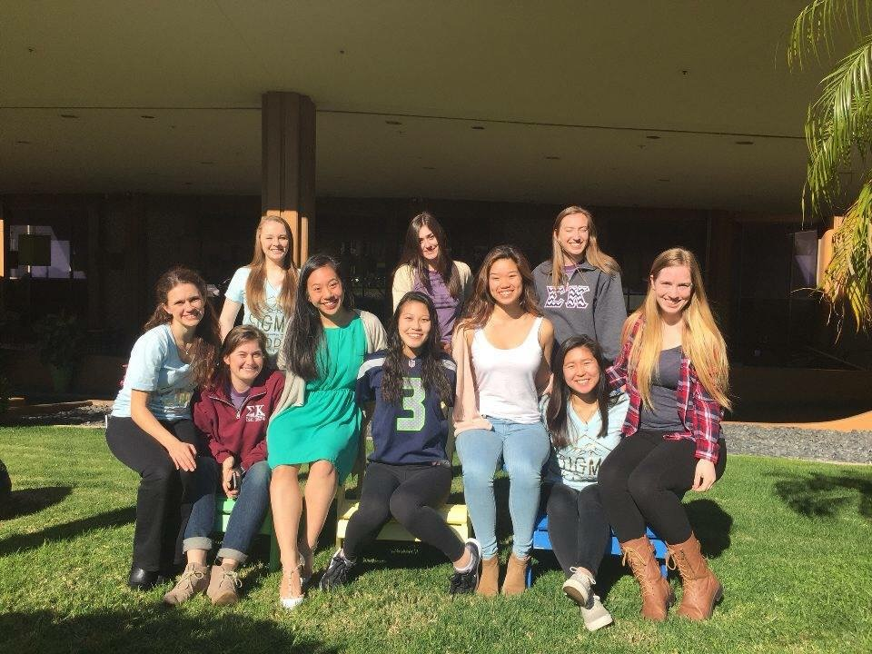

My Husky Story
Christina Fong asked me to take part in a Fail Forward Panel in front of a 200-student sized lecture for the Leadership class that I’m assisting in this quarter. While slightly off-putting, I jumped at the chance for some intense self-reflection and the challenge of sharing my story with two hundred strangers. I have always had a “yes” attitude when new challenges or opportunities come my way. Life is so much more fun the more involved you are, especially when you doing what you love. This was the same attitude I had coming into UW. Although a school made up of over 30,000 undergraduates was not my first-choice, I was determined to become active in new-found communities.
This task was not as easy as I initially thought. Preparing for my Fail Forward Panel with Christina and Anne Browning, I learned that a majority of UW freshmen are relatively new to failure. Throughout my first year, I was incredibly frustrated with the amount of failure and rejection I encountered. I wanted to find new communities that I could dive into head-first, but was unprepared for receiving my first real rejections. I studied the UW RSO registry. I stopped at every booth I saw on campus. High school leadership was how I found my love for involvement and activism so I applied to the clubs that I identified with most: Greek Leaders, UW Leaders, and so on. After numerous rejections, I started to question my identity as a leader and my self-worth. On top of this, the Greek Community was revealing itself to be more stereotypical than I wanted to believe. Nevertheless, I pushed through and kept trying to get involved. There had to be opportunities out there for me and I was going to find them. Unfortunately, this determination led me to apply for clubs I wasn’t passionate about. Thankfully, I’m too stubborn to let my frustration with my situation muster. When I saw an advertisement for a four-day leadership retreat that wanted to make change within the Greek Community, I was ecstatic. The three pillars of the program are leadership development, building friendships across the community, and honest dialogue about the flaws of the community. I stared at the application for a few days, unsure if I could handle another rejection, especially from something I so badly wanted. With encouragement from my friends, I applied.

Now it’s two years later and I am the Director of the RSO and leading the preparation for the club’s fourth annual retreat this Spring Break. I have since found myself involved in the Husky Experience Student Advisory Committee, Dream Project, Pipeline, the FIG program, New Member Education program for my sorority, and Christina Fong’s “Learning Leadership in Theory and Practice” class and still encountering failure. I’ve thought back to my initial decision to apply for the Greek Community Project retreat and how close I was to not applying because I expected rejection. It’s funny to look back, because I no longer fear rejection, I learn from it. I have become a more resilient person. I also know that this application was so important to me, because it was about creating change within my community. A change that I knew was necessary after only a quarter into my experience. Even after continuous rejections, I couldn’t let my self-doubt stop me from trying to change my community for the better.
ReWa, FIG and Dream Project

Days after Trump’s Muslim ban, I noticed an ad for ReWA. I discovered I could volunteer to help a community that was being egregiously attacked. I started volunteering for ReWA in the Fall of 2017 in an after-school program at Maple Elementary.

I found myself staring at a completely overbooked Fall Quarter. Between ReWA, my FIG class, Dream Project mentees, my New Members, and a full course load, I was excited for each opportunity, but nervous about my dwindling free time. I was originally unenthusiastic about my Pipeline seminar. However, I found the class to be filled with optimistic students who, similar to me, wanted to create change in our education system. I come from a low-income area high school and have seen the effects it has on the classroom. Pipeline gave me the opportunity to reflect on how my presence and actions impacted the students as well as deeper dialogue on modern social justice issues. As a Political Science major, I am fascinated by social justice issues and our government’s role in society. However, in Political Science, we very rarely get the opportunity to see first-hand the direct impact these issues have. Pipeline helped direct my passion for social justice and gave me connections to the ReWA students outside of my UW seminar. After the first few weeks of Pipeline I was able to better understand my role as a white woman in a position of power with young children of immigrants.
Greek Community Project
GCP Vestibulum ultricies id enim ut auctor. Fusce tincidunt tortor augue, in feugiat nisl porta id. Ut et lacus rhoncus, auctor velit ac, fringilla urna. Aenean euismod ex id est accumsan, pellentesque fermentum orci mollis. Maecenas eu scelerisque lorem. Aenean ut nunc consequat, congue orci in, vestibulum nunc. Integer in luctus nisi, sed iaculis neque. Nullam sagittis nibh in quam placerat, quis tempor leo dapibus. Mauris tristique tellus nec dolor aliquet, at cursus ex blandit. Integer consequat, lacus ut consectetur tempor, metus nunc porta mi, euismod posuere urna orci imperdiet diam. Mauris egestas eros id purus lacinia, vitae bibendum ante consequat. Nunc neque velit, tincidunt at luctus sit amet, lacinia id dui. Etiam rutrum, nibh ut pretium euismod, purus ipsum tempus metus, eu ultrices libero nibh quis leo. Ut pretium fermentum nulla. Nunc non justo eu massa placerat tristique ut nec est.

Pellentesque nisi magna, congue a dui in, vulputate ornare ante. Cras varius, sem ut finibus euismod, enim arcu pretium nibh, eget laoreet felis lacus at justo. Vestibulum ante justo, imperdiet in est a, cursus maximus ipsum. In vulputate id dui vel lacinia. Cras ut diam purus. Nulla nec velit maximus, imperdiet augue vel, sollicitudin sem. Ut at tortor ut nibh tempor lacinia. Aliquam molestie et nisl sit amet blandit. Donec efficitur risus ut lacus gravida congue. In vitae convallis eros.